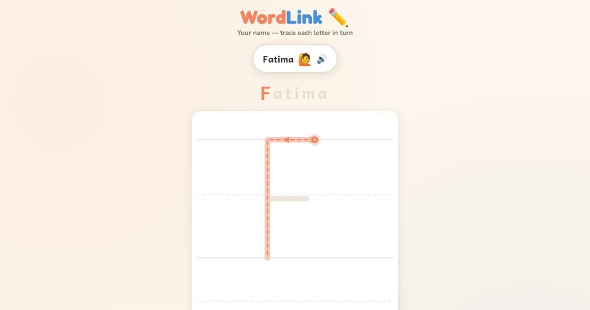

For teachers and tutors
About Trace Your Name in English
For many adult learners, writing their own name in English letters is the first goal. The learner types their name, and the app breaks it into letters to trace one after another. The name is remembered on that device, so it is ready next time. Names with a capital first letter, such as Ali or Fatima, are drawn correctly.

How to use it
- Type your name in the box.
- Trace the first letter.
- Trace each next letter in turn.
- Write your name on paper.
Use it in a class
Useful at enrolment, for signing forms, and for the first lesson. Ask each student to trace their own name, then a classmate's name. It is a good way to start talking about capital letters.